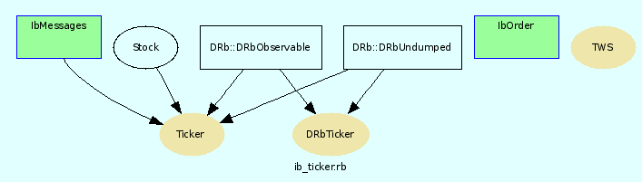

|  |
----------------------------------------------------------------------------------------------------------------------------------- ib_ticker.rb client-server access to the realtime datastream of interactive-brokers usage: ./ib-ticker.rb starts the ib-tws-server in client-Server-Mode
. ./ib-ticker.rb host starts the ib-tws-server in local mode and performs some tests
set host to 'localhost' or the name of the computer running the tws
use remoteTicker.rb to connect to the server
a demo-version of the tws is available here
http://interactivebrokers.com/cgi-pub/jtslink.pl?user_name=edemo
Required Files
- socket
- stock
- drb/drb
- drb/observer
Constants
| TWS_HOST | = | ARGV.shift || 'localhost' |
| set constant | ||